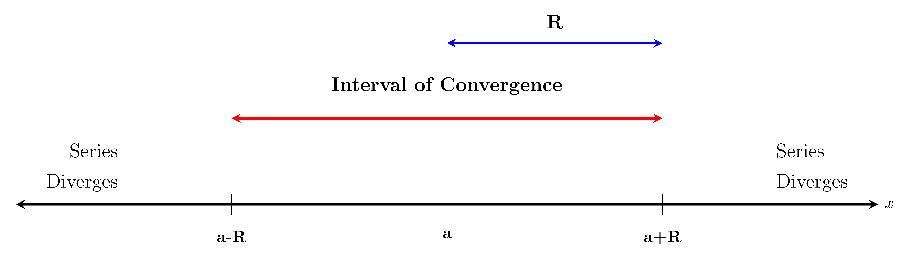

You can think of a power series as being like a polynomial of infinite degree.
This example illustrates a general phenomenon about power series, namely that if $x$ is within a certain distance either side of a, then the power series $\large \sum_{n=0}^{\infty} c_{n}(x-a)^{n}$ converges.
This distance is called the radius of convergence , $R$ of the power series.
There are three possibilities which can occur.
We need to check the convergence of the series at the two endpoints. $a-R$ & $a+R$ separately.
The interval (
$a-R, a+R$ ) together with those endpts. (if any) at which we have convergence together give us the
interval of convergence of the power series.

Example:
For the previous example
$$
\large \sum_{n=0}^{\infty} \frac{(x-1)^{n}}{2^{n}}
$$
we found that the radius of convergence was 2 while the interval of convergence was $(-1,3)$.
Using the Ratio Test to Find the Radius of Convergence
Let $\large \sum_{n=0}^{\infty} C_{n}(x-a)^{n}$ be a power series and for each $n \geq 0$, assume $c_{n} \neq 0, x \neq a$ and set
$$
\large a_{n}=C_{n}(x-a)^{n},
$$
We then look at
$$
\large \lim _{n \rightarrow \infty} \frac{\left|a_{n+1}\right|}{\left|a_{n}\right|}
$$
as we do for the ratio test.
Let's assume now that this limit does exist (where we allow the possibility that it could be $\infty$ ).
Then
$$
\large \begin{aligned}
\lim _{n \rightarrow \infty} \frac{\left|a_{n+1}\right|}{\left|a_{n}\right|} & =\lim _{n \rightarrow \infty} \frac{\left|c_{n+1}(x-a)^{n+1}\right|}{\left|c_{n}(x-a)^{n}\right|} \\
& =\lim _{n \rightarrow \infty} \frac{\left|c_{n+1}\right||x-a|^{n+1}}{\left|c_{n}\right||x-a|^{n}} \\
& =\lim _{n \rightarrow \infty} \frac{\left|c_{n+1}\right||x-a|}{\left|c_{n}\right|} \\
& =|x-a| \lim _{n \rightarrow \infty} \frac{\left|c_{n+1}\right|}{\left|c_{n}\right|}
\end{aligned}
$$
There are 3 possibilities:
Case 1:
$$ \quad \lim _{n \rightarrow \infty} \frac{\left|a_{n+1}\right|}{\left|a_{n}\right|}=\infty$$
In this case
$$
\large \lim _{n \rightarrow \infty} \frac{\left|a_{n+1}\right|}{\left|a_{n}\right|}=|x-a| \lim _{n \rightarrow \infty} \frac{\left|C_{n+1}\right|}{\left|C_{n}\right|}=\infty
$$
and so by the ratio test, the power series diverges for every $x \neq a$.
Note that for $x=a$, the power series is just
$$
\large \sum_{n=0}^{\infty} c_{n}(a-a)^{n}=C_{0}
$$
and so there is always convergence at $x<a$.
Hence in this case, the radius of convergence $R=0=\left(\frac{1}{\infty}\right)$
Case 2:
$$ \large \lim _{n \rightarrow \infty} \frac{\left|a_{n+1}\right|}{\left|a_{n}\right|}=k|x-a|$$
Where $\large k=\lim _{n \rightarrow \infty} \frac{\left|C_{n+1}\right|}{\left|C_{n}\right|}$ is $>0$ and $<\infty$.
If we then let $\large R=\frac{1}{k}$, then
$$
\large \lim _{n \rightarrow \infty} \frac{\left|a_{n+1}\right|}{\left|a_{n}\right|}=k|x-a|=\frac{|x-a|}{R} .
$$
By the ratio test, the series
- converges if $\large \frac{|x-a|}{R}<1$ ie $|x-a|<R$
- diverges if $\large \frac{|x-a|}{R}>1$ is $|x-a|>R$.
Hence in this case the radius of convergence is $R$ and since $R=\frac{1}{k}$ and $0<k<\infty, \quad 0<R<\infty$ also.
Case 3:
$$\lim _{n \rightarrow \infty} \frac{\left|a_{n+1}\right|}{\left|a_{n}\right|}=0$$.
In this case
$$
\large \lim _{n \rightarrow \infty} \frac{\left|a_{n+1}\right|}{\left|a_{n}\right|}=|x-a| \lim _{n \rightarrow \infty} \frac{\left|c_{n+1}\right|}{\left|c_{n}\right|}=0
$$
and so by the ratio test, the power series converges for every $x$ (including $a$ ).
Hence in this case, the radius of convergence $R=\infty \quad\left(=\frac{1}{0}\right)$.
To Summarize:
Method for Computing Radius of Convergence
To calculate the radius of convergence, $R$, for the power series $\large \sum_{n=0}^{\infty} C_{n}(x-a)^{n}$, use the ratio test with
$$
\large a_{n}=C_{n}(x-a)^{n} .
$$
- If $ \large \lim _{n \rightarrow \infty} \frac{\left|a_{n+1}\right|}{\left|a_{n}\right|}=\infty$, then $R=0$
- If $\large \lim _{n \rightarrow \infty} \frac{\left|a_{n-1}\right|}{\left|a_{n}\right|}=k|x-a|$ with $0<k<\infty$, then $R=\frac{1}{k}$ and $0<R<\infty$.
- If $\large \lim _{n \rightarrow \infty} \frac{\left|a_{n+1}\right|}{\left|a_{n}\right|}=0$, then $R=\infty$.
Note that the ratio test tells us nothing if $\large \lim _{n \rightarrow \infty} \frac{\left|a_{n+1}\right|}{\left|a_{n}\right|}$ doesn't exist which can happen, for example if some of the coefficients $C_{n}$ are $0$.
Example:
$$\large \sum_{n=0}^{\infty} \frac{x^{n}}{n!}=1+x+\frac{x^{2}}{2!}+\frac{x^{3}}{3!}+\cdots+\frac{x^{n}}{n!}+\cdots$$
$$
\large (0!=1)
$$
Here $\large C_{n}=\frac{1}{n!}$, so none of the $C_{n}$ s are 0 and we can use the ratio test:
$$
\large \begin{aligned}
\lim _{n \rightarrow \infty} \frac{\left|a_{n+1}\right|}{\left|a_{n}\right|} & =|x| \lim _{n \rightarrow \infty} \frac{\left|c_{n+1}\right|}{\left|c_{n}\right|} \\
& =|x| \lim _{n \rightarrow \infty} \frac{\frac{1}{(n+1)!}}{\frac{1}{n!}} \\
& =|x| \lim _{n \rightarrow \infty} \frac{n!}{(n+1)!} \\
& =|x| \lim _{n \rightarrow \infty} \frac{1}{n+1} \\
& =|x| \cdot 0 \\
& =0 .
\end{aligned}
$$
This gives $R=\infty$, so the series converges for every $x$.
Well see in Chapter 10 that it converges to $e^{x}$.
Example:
$$ \large \sum_{n=0}^{\infty} n!x^{n}=1+x+2!x^{2}+3!x^{3}+\dots$$
Here again all the $C_{n}$ 's are non-zero and we use the ratio test
$$
\large \begin{aligned}
\lim _{n \rightarrow \infty} \frac{\left|a_{n+1}\right|}{\left|a_{n}\right|} & =|x| \lim _{n \rightarrow \infty} \frac{\left|c_{n+1}\right|}{\left|c_{n}\right|} \\
& =|x| \lim _{n \rightarrow \infty} \frac{(n+1)!}{n} \\
& =|x| \lim _{n \rightarrow \infty}(n+1) \\
& =\infty \text { provided } x \neq 0
\end{aligned}
$$
This gives $R=0$ and the series converges only at 0 and diverges everywhere else.
Example:
$$\large \sum_{n=1}^{\infty} \frac{(-1)^{n+1}}{n}(x-1)^{n}=(x-1)-\frac{(x-1)^{2}}{2}+\frac{(x-1)^{3}}{3} \cdots+\frac{(-1)^{n+1}}{n}(x-1)^{n}+\cdots$$
Here $\large C_{n}=\frac{(-1)^{n+1}}{n} \neq 0$ for every $n$, and so using the ratio test
$$
\large \begin{aligned}
\lim _{n \rightarrow \infty} \frac{\left|a_{n+1}\right|}{\left|a_{n}\right|} & =|x-1| \lim _{n \rightarrow \infty} \frac{\left|C_{n+1}\right|}{\left|C_{n}\right|} \\
& =|x-1| \lim _{n \rightarrow \infty} \frac{\left|\frac{(-1)^{n+1}}{n+1}\right|}{\left|\frac{(-1)^{n+1}}{n}\right|} \\
& =|x-1| \lim _{n \rightarrow \infty} \frac{\frac{1}{n+1}}{\frac{1}{n}} \\
& =|x-1| \lim _{n \rightarrow \infty} \frac{n}{n+1} \\
& =|x-1| \lim _{n \rightarrow \infty} \frac{1}{1+\frac{1}{n}} \\
& =|x-1| \cdot 1.
\end{aligned}
$$
Thus $k=1$ and so $R=1 / 1=1$. The ratio test tells us that the series converges for $|x-1|<1$ i.e. $0<x<2$ and diverges for $|x-1|>1$ i.e. $x<0$ or $x>2$.
Note that the ratio test tells us nothing when $|x-1|=1$ ie when $x=0$ or $x=2$.
The ratio test requires $\large \lim _{n \rightarrow \infty} \frac{\left|a_{n+1}\right|}{\left|a_{n}\right|}$ to exist for $a_{n}=C_{n}(x-a)^{n}$.
If some of the $C_{n}$ 's are $0$, there is obviously a problem as then $a_{n}=0$ for these $C_{n}$'s' and we can't divide by 0 when taking $\large \frac{\left|a_{n+1}\right|}{\left|a_{n}\right|}$.
One trick is to rewrite the series in such a way that all the $a_{n}$ 's are non-zero.
Example:
$$ x-\frac{x^{3}}{3!}+\frac{x^{5}}{5!}-\frac{x^{7}}{7!}+\cdots+(-1)^{n} \frac{x^{2 n-1}}{(2 n-1)!}+\cdots$$
(even powers of $x$ 'missing')
If we write this as
$$
\large \sum_{n=0}^{\infty} \frac{(-1)^{n-1}}{(2 n-1)!} x^{2 n-1}
$$
and consider it as a series in $x^{2 n-1}$ rather than in $x^{n}$, then we let
$$
\large a_{1}=x, \quad a_{2}=\frac{-x^{3}}{3!}, \cdots \text { so } \quad a_{n}=\frac{(-1)^{n-1} x^{2 n-1}}{(2 n-1)!} .
$$
Note that here $a_{n+1}=(-1)^{n+1-1} \frac{x^{2(n+1)-1}}{(2(n+1)-1)!}=\frac{(-1)^{n}}{(2 n+1)!} x^{2 n+1}$
Now all the $a_n$ 's are non-zero provided $x \neq 0$ and we can use the ratio test to find that.
$$
\large \begin{aligned}
\lim _{n \rightarrow \infty} \frac{\left|a_{n+1}\right|}{\left|a_{n}\right|} & =\lim _{n \rightarrow \infty} \frac{\left|\frac{(-1)^{n}}{(2 n+1)!} x^{2 n+1}\right|}{\left|\frac{(-1)^{n-1}}{(2 n-1)!} x^{2 n-1}\right|} \\
& =\lim _{n \rightarrow \infty}\left|\frac{(2 n-1)!}{(2 n+1)!} \frac{x^{2 n+1}}{x^{2 n-1}}\right| \\
& =\lim _{n \rightarrow \infty}\left|\frac{\cancel{(2 n-1)(2 n-2) \cdots 2 \cdot 1}}{(2 n+1)(2 n)\cancel{(2 n-1)(2 n-2) \cdots 2 \cdot 1}} \cdot x^{2}\right| \\
& =\left|x^{2}\right| \lim _{n \rightarrow \infty} \frac{1}{(2 n+1)(2 n-1)} \\
& =1 \cdot x^{2} \cdot 0 \\
& =0 .
\end{aligned}
$$
Thus $\large \lim _{n \rightarrow \infty} \frac{\left|a_{n+1}\right|}{\left|a_{n}\right|}=0<1$ for every $x$.
The ratio test then guarantees that the series converges for every $x$. Thus the ratio of convergence is $\infty$ and the interval of convergence is $(-\infty, \infty)$ or $\mathbb{R}$ (i.e. all real numbers).
What Happens at the Endpoints of the Interval of Convergence?
The ratio test tells us that a power series will converge inside $(a-R, a+R)$ and diverge for $x<a-R$ or $x>a+R$.
However, it tells us nothing about what happens at the endpoints $a-R, a + R$ of the interval of convergence.
The answer depends on the series and we need to check the behaviour at the endpots separately.
Example:
$$\sum_{n=1}^{\infty} \frac{(-1)^{n+1}}{n}(x-1)^{n}=(x-1)-\frac{(x-1)^{2}}{2}+\frac{(x-1)^{3}}{3}- \cdots \cdot$$
We already found the radius of convergence was 1 and so the series cenverges for $|x-1|<1$ ie for $0<x<2$.
For the endpoints $\large x=0,x=2$ we check separately.
At $\large x=0$, we have
$$
\large \begin{aligned}
\sum_{n=1}^{\infty} \frac{(-1)^{n-1}(-1)^{n}}{n} & =\sum_{n=1}^{\infty} \frac{(-1)^{2 n-1}}{n} \\
& =\sum_{n=1}^{\infty} \frac{-1}{n}
\end{aligned}
$$
This is the negative of the Harmonic Series and so the power series diverges at $x=0$.
At $\large x=2$, we have
$$
\large \sum_{n=1}^{\infty} \frac{(-1)^{n-1}}{n}(1)^{n}=\sum_{n=1}^{\infty} \frac{(-1)^{n-1}}{n} .
$$
This is the Alternating Harmonic Series which we already saw converges by the oltemating series test.
Thus $\large \sum_{n=1}^{\infty} \frac{(-1)^{n}}{n}(x-1)^{n}$ converges on $(0,2]$ and diverges everywhere else.
We shall see later that this series. converges to $\ln x$.
Example:
Find the radius and interval of convergence of the series:
$$
\large 1+2^{2} x^{2}+2^{4} x^{4}+2^{6} x^{6}+\cdots+2^{2 n} x^{2 n}+\cdots \cdot
$$
If we simply take $a_{n}=2^{n} x^{n}$ for $n$ even and 0 for $n$ odd, then we can't find $\lim _{n \rightarrow \infty} \frac{\left|a_{n+1}\right|}{\left|a_{n}\right|}$.
So instead let $\large a_{n}=2^{2 n} x^{2 n}$.
Then $\large a_{n+1}=2^{2(n+1)} x^{2(n+1)}=2^{2 n+2} x^{2 n+2}$ and
$$
\large \begin{aligned}
\lim _{n \rightarrow \infty} \frac{\left|a_{n+1}\right|}{\left|a_{n}\right|} & =\lim _{n \rightarrow \infty}\left|\frac{2^{2 n+2} x^{2 n+2}}{2^{2 n} x^{2 n}}\right| \\
& =\lim _{n \rightarrow \infty}\left|2^{2} x^{2}\right| \\
& =\left|x^{2}\right| \lim _{n \rightarrow \infty} 4 \\
& =4\left|x^{2}\right|
\end{aligned}
$$
The ratio test tells us that the series converges if $4\left|x^{2}\right|<1$ i.e. $|x|<\frac{1}{2}$ or $-\frac{1}{2}<x<\frac{1}{2}$ and diverges if $4 |x^{2} \mid>1$ is $|x|>\frac{1}{2}$ or $x<-\frac{1}{2}$ or $x>\frac{1}{2}$.
At $\large x= \pm \frac{1}{2}, 2^{2 n} x^{2 n}=2^{2 n}\left(\frac{1-1}{2}\right)^{2 n}=\frac{2^{2 n}}{2^{2 n}}=1$, so all the terms are 1 and so the series diverges by the divergence test.
Thus the radius of convergence is $\large \frac{1}{2}$ and the interval of convergence is $\large \left(-\frac{1}{2}, \frac{1}{2}\right)$.